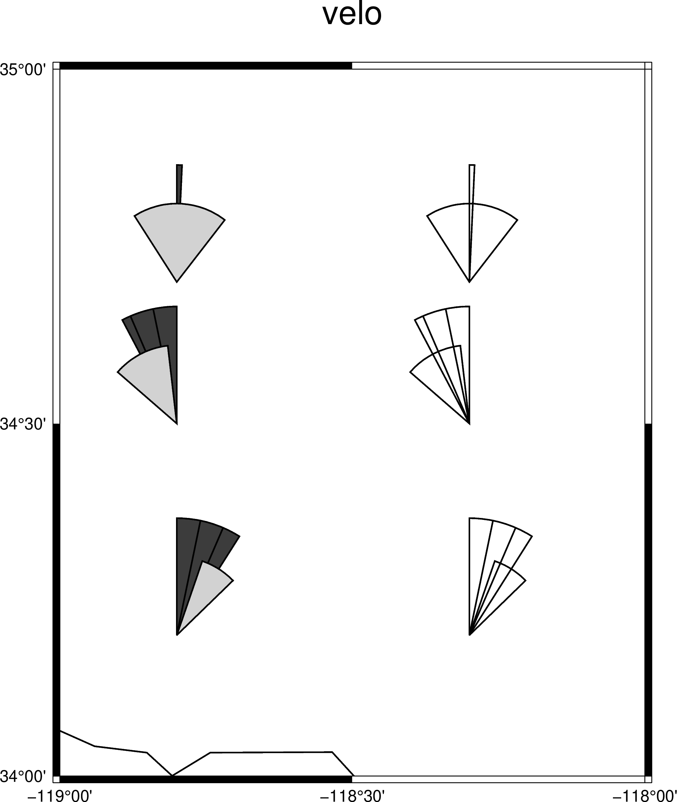
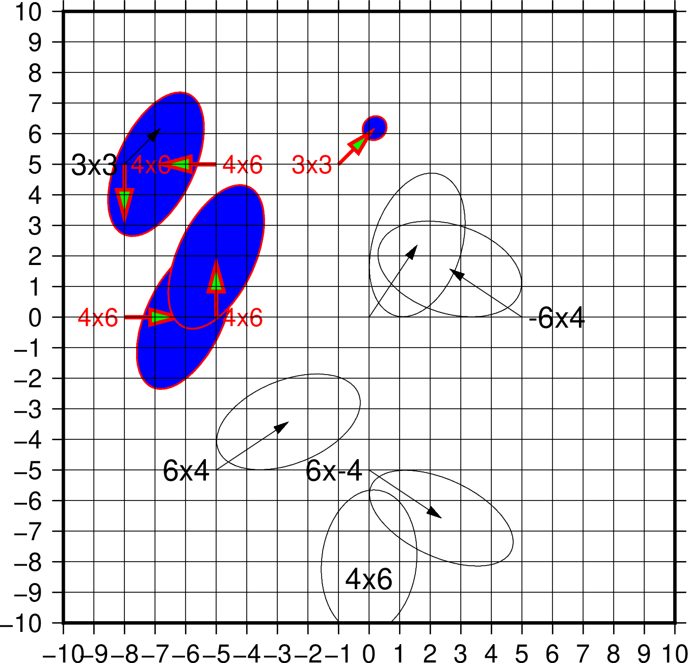

velo¶
| 官方文件: | velo |
|---|---|
| 簡介: | 在地圖上繪製三種符號：矢量（向量）、十字線和旋轉餅圖 |
-S選項¶
-S 選項決定要繪製哪一種符號，及其輸入數據的格式。
-Se<velscale>/<confidence>/<fontsize>繪製矢量，並可選擇用橢圓表示不確定度。輸入數據中每列的含義爲：
- 起點的經度
- 起點的緯度
- 矢量的東向分量
- 矢量的北向分量
- 東向分量的不確定度（1-sigma）
- 北向分量的不確定度（1-sigma）
- 東向分量和北向分量的correlation
- 名稱（可選）
說明：
<velscale>控制了矢量的縮放比例，其對應了速度值爲1的箭頭的長度，默認單位由參數PROJ_LENGTH_UNIT決定，也可以自己添加長度單位i|c|p<confidence>設置了橢圓的2D置信區間的極限，比如0.95代表95%置信區間<fontsize>是名稱的文本字號- 橢圓的填充色由
-G選項控制 - 橢圓的輪廓以及矢量的畫筆屬性由
-W選項控
-Sr<velscale>/<confidence>/<fontsize>與
-Se類似，區別在於輸入文件不同：- 起點的經度
- 起點的緯度
- 矢量的東向分量
- 矢量的北向分量
- 橢圓的半長軸
- 橢圓的半短軸
- 橢圓的長軸相對於水平方向逆時針旋轉的角度
- 名稱（可選）
-Sn<barscale>繪製各向異性矢量，
<barscale>是各向異性矢量的縮放比例。輸入數據中每列的含義爲：- 經度
- 緯度
- 各向異性矢量的東向分量
- 各向異性矢量的北向分量
-Sw<wedge_scale>/<wedge_mag>繪製旋轉餅圖。輸入數據中每列的含義爲：
- 經度
- 緯度
- 旋轉餅圖的旋轉角度（弧度制）
- 旋轉餅圖的不確定度（弧度制）
旋轉餅圖由兩個同心扇形組成。一個扇形是旋轉餅圖本身（下稱餅圖扇形），另一個扇形則表示旋轉餅圖的不確定度（下稱不確定度扇形）。兩個扇形的半徑由
<wedge_scale>給出。兩個扇形的角度分別爲旋轉餅圖的旋轉角度和不確定度乘以<wedge_mag>。餅圖的填充色由-G選項控制， 不確定度的顏色由-E控制。餅圖扇形從正北開始，順時針旋轉。不確定度扇形從旋轉餅圖的結束開始，向順時針和逆時針兩個方向旋轉，兩個方向旋轉的角度均爲不確定度的 2 倍。-Sx<cross_scale>繪製應變十字線。
<cross_scale>控制十字線的大小。輸入文件中每列的含義爲：- 經度
- 緯度
- eps1：應變張量的擴張本徵值，擴張爲正
- eps2： 應變張量的壓縮本徵值，擴張爲正
- eps2的方位角（北方向順時針旋轉的角度）
選項¶
-A<params>- 修改矢量的屬性，見 繪製矢量/箭頭 一節
-D<sigma_scale>- 控制
-Se和-Sr中速度不確定度以及-Sw中旋轉不確定度的縮放。該參數可以與<confidence>一起控制不確定度的繪製 -F<fill>- 控制邊框和標註的顏色
-E<fill>- 控制
-Sw中餅圖不確定度的填充 -G<fill>- 控制顏色？
-L- 繪製線段。使用該選擇，則橢圓和斷層面會根據
-W選項繪製輪廓 -N- 不跳過區域範圍外的符號
-W<pen>- 設置速度箭頭、橢圓輪廓以及斷層邊界的顏色
- -U[label][+c][+jjust][+odx/dy] (more …)
- 在图上绘制GMT时间戳logo
- -t[transp] (more …)
- 设置图层透明度（百分比）。取值范围为0（不透明）到100（全透明）
示例¶
#!/bin/bash
gmt begin velo_ex1 png,pdf
# 左边三个符号
gmt velo -JM15c -R241/242/34/35 -B0.5 -BWeSn+tvelo \
-Sw3c/1.e7 -W1p -G60 -E210 -D2 << EOF
# lon lat spin(rad/yr) spin_sigma (rad/yr)
241.2 34.2 5.65E-08 1.17E-08
241.2 34.5 -4.85E-08 1.85E-08
241.2 34.7 4.46E-09 3.07E-08
EOF
# 右边三个符号
gmt velo -Sw3c/1.e7 -W1p -D2 << EOF
# lon lat spin(rad/yr) spin_sigma (rad/yr)
241.7 34.2 5.65E-08 1.17E-08
241.7 34.5 -4.85E-08 1.85E-08
241.7 34.7 4.46E-09 3.07E-08
EOF
gmt coast -W1p -Di
gmt end

velo示例圖1
#!/bin/bash
gmt begin velo_ex2 png,pdf
gmt velo -R-10/10/-10/10 -Wthin,red -Se0.2c/0.39/12 -B1g1 \
-BWeSn -Jx0.2i -Ggreen -Eblue -L -N -A1c+p3p+e << EOF
# Long. Lat. Evel Nvel Esig Nsig CorEN SITE
# (deg) (deg) (mm/yr) (mm/yr)
-8. 0. 5.0 0.0 4.0 6.0 0.500 4x6
-5. 0. 0.0 5.0 4.0 6.0 0.500 4x6
-5. 5. -5.0 0.0 4.0 6.0 0.500 4x6
-8. 5. 0.0 -5.0 0.0 0.0 0.500 4x6
-1. 5. 3.0 3.0 1.0 1.0 0.100 3x3
EOF
gmt velo -Se0.2c/0.39/14 -A0.25c+p0.25p+e << EOF
# Long. Lat. Evel Nvel Esig Nsig CorEN SITE
# (deg) (deg) (mm/yr) (mm/yr)
0. -8. 0.0 0.0 4.0 6.0 0.100 4x6
-8. 5. 3.0 3.0 0.0 0.0 0.200 3x3
0. 0. 4.0 6.0 4.0 6.0 0.300
-5. -5. 6.0 4.0 6.0 4.0 0.400 6x4
5. 0. -6.0 4.0 6.0 4.0 -0.300 -6x4
0. -5. 6.0 -4.0 6.0 4.0 -0.500 6x-4
EOF
gmt end

velo示例圖2
下面的示例展示瞭如何繪製應變十字線:
gmt begin test pdf
gmt velo -JX10c/10c -R0/10/0/10 -Sx10 -W1p << EOF
5 5 0.5 0.3 45
EOF
gmt end